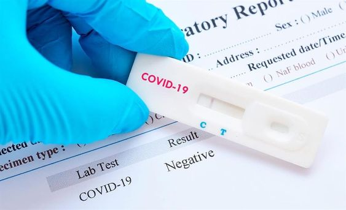

Guía para entender las diferencias entre los 3 principales test de Covid-19
La infección por Covid-19 se puede detector a través de tres tipos de pruebas diagnósticas: PCR, Test serológico para detectar anticuerpos o Test rápidos. Te explicamos las diferencias entre las tres pruebas y lo que signfican los resultados para saber si estás contagiado o no.
PCR
Es el método más sensible y específico que detecta el ARN del virus, es decir, si hay infección o presencia del virus. Se hace mediante frotis nasofaríngeo, introduciendo un bastoncillo en la parte posterior de la nariz para obtener la muestra. La prueba puede ser incómoda, causar cosquilleo, lagrimeo o tos. Este test no es inmediato, sino que se analiza en el laboratorio y los resultados pueden ser:
- Positivo: significa que el virus está presente en la muestra y que la persona está infectada.
- Negativo: significa que el virus no está presente y la persona no está infectada, aunque puede haberlo estado anteriormente, por lo que puede ser necesario realizar una segunda prueba.

Pruebas rápidas
Puede analizarse una muestra de saliva, un frotis nasal o una punción capilar. Facilitan el resultado en 10-15 minutos, por lo que no precisan laboratorio. Se emplean para realizar el cribado de los pacientes sintomáticos y del personal sanitario. Cuando nos da positivo en antígenos es que ya estamos infectados, pero estas pruebas son las que tienen menor sensibilidad, es decir, pueden ser negativas porque aún no tengas una infección grande.
ELISA o Test serológico mediante análisis de sangre
Es un test cualitativo indirecto que permite detectar los anticuerpos producidos tras el contacto con el virus. Tampoco es inmediato, ya que se analiza en el laboratorio. Si el resultado es positivo indica la presencia de inmunoglobulinas, es decir, la persona ha estado expuesta al virus, pero puede ser una infección activa o pasada. Para saber si la infección está activa o ya ha pasado, estudiaremos los tipos de inmunoglobulinas: IgM o IgG.
- IgM negativo: no hay contacto con el virus actualmente (puede haber habido contacto anteriormente).
- IgM positivo: infección en fase aguda.
- IgG negativo: no ha habido contacto con el virus o bien el contacto es reciente y aún no hay respuesta secundaria.
- IgG positivo: infección en el pasado (no aguda); la persona estaría inmunizada.